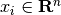
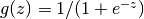
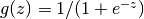
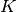
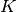

1.17. Neural network models (supervised)¶
1.17.1. Multi-layer Perceptron¶
Multi-layer Perceptron (MLP) is a supervised learning algorithm that learns
a function by training on a dataset,
where  is the number of dimensions for input and
is the number of dimensions for input and  is the the
number of dimensions for output. Given a set of features
and a target , it can learn a non-linear function approximator for either
classification or regression. It is different from logistic regression, in that
between the input and the output layer, there can be one or more non-linear
layers, called hidden layers. Figure 1 shows a one hidden layer MLP with scalar
output.
is the the
number of dimensions for output. Given a set of features
and a target , it can learn a non-linear function approximator for either
classification or regression. It is different from logistic regression, in that
between the input and the output layer, there can be one or more non-linear
layers, called hidden layers. Figure 1 shows a one hidden layer MLP with scalar
output.

Figure 1 : One hidden layer MLP.
The leftmost layer, known as the input layer, consists of a set of neurons representing the input features. Each neuron in the hidden layer transforms the values from the previous layer with a weighted linear summation , followed by a non-linear activation function - like the hyperbolic tan function. The output layer receives the values from the last hidden layer and transforms them into output values.
The module contains the public attributes coefs_ and intercepts_.
coefs_ is a list of weight matrices, where weight matrix at index
 represents the weights between layer and layer
. intercepts_ is a list of bias vectors, where the vector
at index represents the bias values added to layer .
represents the weights between layer and layer
. intercepts_ is a list of bias vectors, where the vector
at index represents the bias values added to layer .
The advantages of Multi-layer Perceptron are:
- Capability to learn non-linear models.
- Capability to learn models in real-time (on-line learning) using partial_fit.
The disadvantages of Multi-layer Perceptron (MLP) include:
- MLP with hidden layers have a non-convex loss function where there exists more than one local minimum. Therefore different random weight initializations can lead to different validation accuracy.
- MLP requires tuning a number of hyperparameters such as the number of hidden neurons, layers, and iterations.
- MLP is sensitive to feature scaling.
Please see Tips on Practical Use section that addresses some of these disadvantages.
1.17.2. Classification¶
Class MLPClassifier implements a multi-layer perceptron (MLP) algorithm that trains using Backpropagation.
MLP trains on two arrays: array X of size (n_samples, n_features), which holds the training samples represented as floating point feature vectors; and array y of size (n_samples,), which holds the target values (class labels) for the training samples:
>>> from sklearn.neural_network import MLPClassifier
>>> X = [[0., 0.], [1., 1.]]
>>> y = [0, 1]
>>> clf = MLPClassifier(algorithm='l-bfgs', alpha=1e-5, hidden_layer_sizes=(5, 2), random_state=1)
>>> clf.fit(X, y)
MLPClassifier(activation='relu', algorithm='l-bfgs', alpha=1e-05,
batch_size=200, beta_1=0.9, beta_2=0.999, early_stopping=False,
epsilon=1e-08, hidden_layer_sizes=(5, 2), learning_rate='constant',
learning_rate_init=0.001, max_iter=200, momentum=0.9,
nesterovs_momentum=True, power_t=0.5, random_state=1, shuffle=True,
tol=0.0001, validation_fraction=0.1, verbose=False,
warm_start=False)
After fitting (training), the model can predict labels for new samples:
>>> clf.predict([[2., 2.], [-1., -2.]])
array([1, 0])
MLP can fit a non-linear model to the training data. clf.coefs_ contains the weight matrices that constitute the model parameters:
>>> [coef.shape for coef in clf.coefs_]
[(2, 5), (5, 2), (2, 1)]
To get the raw values before applying the output activation function, run the following command,
use MLPClassifier.decision_function:
>>> clf.decision_function([[2., 2.], [1., 2.]])
array([ 47.6..., 47.6...])
Currently, MLPClassifier supports only the Cross-Entropy loss function, which allows probability estimates by running the predict_proba method.
MLP trains using Backpropagation. More precisely, it trains using some form of
gradient descent and the gradients are calculated using Backpropagation. For
classification, it minimizes the Cross-Entropy loss function, giving a vector
of probability estimates per sample  :
:
>>> clf.predict_proba([[2., 2.], [1., 2.]])
array([[ 0., 1.],
[ 0., 1.]])
MLPClassifier supports multi-class classification by applying Softmax as the output function.
Further, the algorithm supports multi-label classification in which a sample can belong to more than one class. For each class, the output of MLPClassifier.decision_function passes through the logistic function. Values larger or equal to 0.5 are rounded to 1, otherwise to 0. For a predicted output of a sample, the indices where the value is 1 represents the assigned classes of that sample:
>>> X = [[0., 0.], [1., 1.]]
>>> y = [[0, 1], [1, 1]]
>>> clf = MLPClassifier(algorithm='l-bfgs', alpha=1e-5, hidden_layer_sizes=(15,), random_state=1)
>>> clf.fit(X, y)
MLPClassifier(activation='relu', algorithm='l-bfgs', alpha=1e-05,
batch_size=200, beta_1=0.9, beta_2=0.999, early_stopping=False,
epsilon=1e-08, hidden_layer_sizes=(15,), learning_rate='constant',
learning_rate_init=0.001, max_iter=200, momentum=0.9,
nesterovs_momentum=True, power_t=0.5, random_state=1, shuffle=True,
tol=0.0001, validation_fraction=0.1, verbose=False,
warm_start=False)
>>> clf.predict([1., 2.])
array([[1, 1]])
>>> clf.predict([0., 0.])
array([[0, 1]])
See the examples below and the doc string of MLPClassifier.fit for further information.
Examples:
- example_plot_mlp_alpha.py
1.17.3. Regression¶
Class MLPRegressor implements a multi-layer perceptron (MLP) that trains using backpropagation with no activation function in the output layer, which can also be seen as using the identity function as activation function. Therefore, it uses the square error as the loss function, and the output is a set of continuous values.
MLPRegressor also supports multi-output regression, in which a sample can have more than one target.
1.17.4. Algorithms¶
MLP trains using Stochastic Gradient Descent, Adam, or L-BFGS. Stochastic Gradient Descent (SGD) updates parameters using the gradient of the loss function with respect to a parameter that needs adaptation, i.e.
where is the learning rate which controls the step-size in the parameter space search. is the loss function used for the network.
More details can be found in the documentation of SGD
Adam is similar to SGD in a sense that it is a stochastic optimization algorithm, but it can automatically adjust the amount to update parameters based on adaptive estimates of lower-order moments.
With SGD or Adam, training supports online and mini-batch learning.
L-BFGS is a fast learning algorithm that approximates the Hessian matrix which represents the second-order partial derivative of a function. Further it approximates the inverse of the Hessian matrix to perform parameter updates. The implementation uses the Scipy version of L-BFGS..
If the selected algorithm is ‘L-BFGS’, training does not support online nor mini-batch learning.
1.17.5. Complexity¶
Suppose there are  training samples, features,
training samples, features,  hidden layers, each containing neurons - for simplicity, and
output neurons. The time complexity of backpropagation is
, where is the number
of iterations. Since backpropagation has a high time complexity, it is advisable
to start with smaller number of hidden neurons and few hidden layers for
training.
hidden layers, each containing neurons - for simplicity, and
output neurons. The time complexity of backpropagation is
, where is the number
of iterations. Since backpropagation has a high time complexity, it is advisable
to start with smaller number of hidden neurons and few hidden layers for
training.
1.17.6. Mathematical formulation¶
Given a set of training examples
where  and , a one hidden
layer one hidden neuron MLP learns the function
where and are
model parameters. represent the weights of the input layer and
hidden layer, resepctively; and represent the bias added to
the hidden layer and the output layer, respectively.
 is the activation function, set by default as
the hyperbolic tan. It is given as,
is the activation function, set by default as
the hyperbolic tan. It is given as,
For binary classification,  passes through the logistic function
 to obtain output values between zero and one. A
threshold, set to 0.5, would assign samples of outputs larger or equal 0.5
to the positive class, and the rest to the negative class.
passes through the logistic function
 to obtain output values between zero and one. A
threshold, set to 0.5, would assign samples of outputs larger or equal 0.5
to the positive class, and the rest to the negative class.
If there are more than two classes, itself would be a vector of
size (n_classes,). Instead of passing through logistic function, it passes
through the softmax function, which is written as,
where  represents the th element of the input to softmax,
which corresponds to class , and  is the number of classes.
The result is a vector containing the probabilities that sample
belong to each class. The output is the class with the highest probability.
represents the th element of the input to softmax,
which corresponds to class , and  is the number of classes.
The result is a vector containing the probabilities that sample
belong to each class. The output is the class with the highest probability.
In regression, the output remains as ; therefore, output activation
function is just the identity function.
MLP uses different loss functions depending on the problem type. The loss function for classification is Cross-Entropy, which in binary case is given as,
where is an L2-regularization term (aka penalty)
that penalizes complex models; and  is a non-negative
hyperparameter that controls the magnitude of the penalty.
is a non-negative
hyperparameter that controls the magnitude of the penalty.
For regression, MLP uses the Square Error loss function; written as,
Starting from initial random weights, multi-layer perceptron (MLP) minimizes the loss function by repeatedly updating these weights. After computing the loss, a backward pass propagates it from the output layer to the previous layers, providing each weight parameter with an update value meant to decrease the loss.
In gradient descent, the gradient of the loss with respect to the weights is computed and deducted from . More formally, this is expressed as,
where is the iteration step, and  is the learning rate
with a value larger than 0.
is the learning rate
with a value larger than 0.
The algorithm stops when it reaches a preset maximum number of iterations; or when the improvement in loss is below a certain, small number.
1.17.7. Tips on Practical Use¶
Multi-layer Perceptron is sensitive to feature scaling, so it is highly recommended to scale your data. For example, scale each attribute on the input vector X to [0, 1] or [-1, +1], or standardize it to have mean 0 and variance 1. Note that you must apply the same scaling to the test set for meaningful results. You can use StandardScaler for standardization.
>>> from sklearn.preprocessing import StandardScaler >>> scaler = StandardScaler() >>> # Don't cheat - fit only on training data >>> scaler.fit(X_train) >>> X_train = scaler.transform(X_train) >>> # apply same transformation to test data >>> X_test = scaler.transform(X_test)An alternative and recommended approach is to use StandardScaler in a Pipeline
Finding a reasonable regularization parameter
is best done using GridSearchCV, usually in the range 10.0 ** -np.arange(1, 7).
Empirically, we observed that L-BFGS converges faster and with better solutions on small datasets. For relatively large datasets, however, Adam is very robust. It usually converges quickly and gives pretty good performance. SGD with momentum or nesterov’s momentum, on the other hand, can perform better than those two algorithms if learning rate is correctly tuned.
1.17.8. More control with warm_start¶
If you want more control over stopping criteria or learning rate in SGD, or want to do additional monitoring, using warm_start=True and max_iter=1 and iterating yourself can be helpful:
>>> X = [[0., 0.], [1., 1.]]
>>> y = [0, 1]
>>> clf = MLPClassifier(hidden_layer_sizes=(15,), random_state=1, max_iter=1)
>>> for i in range(10):
... clf.fit(X, y)
... # additional monitoring / inspection
MLPClassifier(...
References:
- “Learning representations by back-propagating errors.” Rumelhart, David E., Geoffrey E. Hinton, and Ronald J. Williams.
- “Stochastic Gradient Descent” L. Bottou - Website, 2010.
- “Backpropagation” Andrew Ng, Jiquan Ngiam, Chuan Yu Foo, Yifan Mai, Caroline Suen - Website, 2011.
- “Efficient BackProp” Y. LeCun, L. Bottou, G. Orr, K. Müller - In Neural Networks: Tricks of the Trade 1998.
- “Adam: A method for stochastic optimization.” Kingma, Diederik, and Jimmy Ba. arXiv preprint arXiv:1412.6980 (2014).